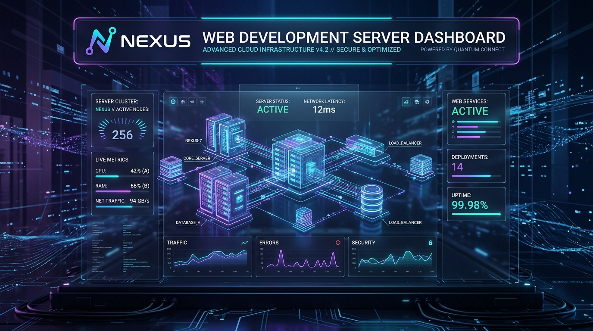

서버 온라인 — 정상 작동 중
김기환의 웹 개발 서버가
성공적으로 실행되었습니다
c:\Users\Admin\Desktop\my_site 작업 공간에 경량 고성능 HTTP 서버가 구축되었습니다. 실시간 API 통신, 정적 파일 서빙, 상태 원격 진단을 지원합니다.
c:\Users\Admin\Desktop\my_site 작업 공간에 경량 고성능 HTTP 서버가 구축되었습니다. 실시간 API 통신, 정적 파일 서빙, 상태 원격 진단을 지원합니다.

// API 테스트 결과를 불러오는 중...현재 폴더 내 index.html 파일을 편집하여 원하는 웹사이트 레이아웃과 콘텐츠를 구성하세요.
style.css의 CSS 변수 및 클래스를 수정하여 브랜드 색상, 글꼴, 레이아웃을 즉시 커스터마이징할 수 있습니다.
server.js에 /api/... 라우트를 자유롭게 추가하거나 이미지, 스크립트, 문서를 폴더에 넣으면 자동으로 서빙됩니다.